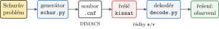
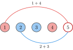
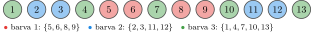
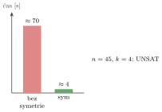

14.6 SAT řešič v praxi: Schurova čísla (proseminář 7)¶
Rozšíření z prosemináře 7
Oddíl je z prosemináře 7: praktická ukázka práce s řešičem (Kissat, formát DIMACS, čtení modelu, důkaz nesplnitelnosti). Je to rozšíření nad přednášku, instalaci ani ovládání řešiče na test znát nemusíš. V typové úloze 3 se kóduje ručně – proměnné, jejich význam a klauzule – jako v oddílu 14.3 a ve cvičení 7 (oddíl 14.7). Z tohoto oddílu se k tomu hodí jen pododdíl 14.6.3: kódování Schurova problému a otázka, zda jsou potřeba klauzule „nejvýše jedna barva“.
Na přednášce jsme slyšeli, že SAT řešiče zvládají obrovské instance. Proseminář 7 to zkouší prakticky, od instalace po přečtení výsledku: (1) instalace volně dostupného řešiče Kissat, (2) vstupní formát DIMACS – jak problém zapsat jako CNF, (3) výstup – jak přečíst odpověď a proč věřit i odpovědi „nesplnitelné“.

14.6.1 Schurův problém¶
Problém 14.25: \(\prob{Schur}\) a Schurovo číslo
Vstup: čísla \(n,k\).
Otázka: lze čísla \(\{1,2,\dots,n\}\) obarvit \(k\) barvami tak, aby žádná trojice \(x+y=z\) nebyla jednobarevná? (\(x=y\) je povoleno: \(1+1=2\).)
Schurovo číslo \(S(k)\) = největší \(n\), pro které to jde.
Příklad \(n=4\), \(k=2\): červená \(\{1,4\}\) (\(1+1=2\), \(1+4=5\), … – nic), modrá \(\{2,3\}\) (\(2+2=4\) je červená – v pořádku).
Příklad 14.26: Pět čísel dvěma barvami nejde
Bez újmy na obecnosti je 1 červená (barvy můžeme prohodit). Pak je vše vynucené:
Řešení
- \(1+1=2\) \(\Rightarrow\) 2 modrá;
- \(2+2=4\) \(\Rightarrow\) 4 červená;
- \(1+3=4\) \(\Rightarrow\) 3 modrá;
- 5: \(1+4=5\) zakazuje červenou, \(2+3=5\) zakazuje modrou. Spor.
Tedy \(S(2)=4\) (ověřeno hrubou silou).

| \(k\) | 1 | 2 | 3 | 4 | 5 |
|---|---|---|---|---|---|
| \(S(k)\) | 1 | 4 | 13 | 44 | 160 |
| důkaz | 2 B | 48 B | 6 kB | 350 MB | \(\approx\) 2 PB |
| 1965 | 2017, SAT |
„Důkaz“ = velikost DRAT důkazu, že \(\{1,\dots,S(k)+1\}\) obarvit nejde (viz níže). \(S(4)=44\) je známo od roku 1965, \(S(5)=160\) bylo spočteno v roce 2017 pomocí SAT řešiče.
14.6.2 Instalace řešiče Kissat¶
Kissat (Armin Biere) je opakovaný vítěz SAT Competition, volně šiřitelný (MIT licence). Potřebujeme Linux nebo macOS, gcc, make, git; ve Windows použijte WSL.
$ git clone https://github.com/arminbiere/kissat.git
$ cd kissat
$ ./configure && make # cca 1 minuta
$ build/kissat --version
4.0.4Alternativy bez kompilace: apt install cadical (Ubuntu), pip install python-sat (knihovna PySAT s několika řešiči pro Python; na prosemináři se dál nepoužívá).
14.6.3 Proměnné a klauzule¶
Redukce: \(\href{#ch-resice-sat-def-schur}{\class{woo-pk-ch-resice-sat-def-schur}{\prob{Schur}}} \mathrel{\href{../ch-redukce/ch-redukce-jak-porovnat-slozitost-dvou-problemu.html#def-redukce}{\class{woo-pk-def-redukce}{\redp}}} \href{../ch-cook/ch-cook-cook-levinova-veta.html#prob-sat}{\class{woo-pk-prob-sat}{\prob{SAT}}}\)
\((n,k)\) \(\;\longmapsto\;\) formule v \(nk\) proměnných \(x_{i,c}\) s \(n+k\lfloor n^2/4\rfloor\) klauzulemi
- Proměnné:
- \(x_{i,c}\) = „číslo \(i\) má barvu \(c\)“. DIMACS chce čísla \(1,2,3,\dots\): \(x_{i,c}\mapsto(i-1)\,k+c\).
- Aspoň jedna barva:
- \(x_{i,1}\lor x_{i,2}\lor\dots\lor x_{i,k}\) pro každé \(i\).
- Žádná jednobarevná trojice:
- \(\lnot x_{x,c}\lor\lnot x_{y,c}\lor\lnot x_{x+y,c}\) pro \(x\le y\), \(x+y\le n\) a každé \(c\).
Pro \(k=3\) vypadá číslování takto (řádek = číslo \(i\), sloupec = barva \(c\), v políčku číslo proměnné):
| \(c=1\) | \(c=2\) | \(c=3\) | |
|---|---|---|---|
| \(i=1\) | 1 | 2 | 3 |
| \(i=2\) | 4 | 5 | 6 |
| \(i=3\) | 7 | 8 | 9 |
| \(i=4\) | 10 | 11 | 12 |
| … | … | … | … |
Počet klauzulí (nad rámec přednášky – dopočteno): dvojic \(x\le y\) s \(x+y\le n\) je \(\lfloor n^2/4\rfloor\), celkem tedy \(n+k\lfloor n^2/4\rfloor\); pro \(n=13\), \(k=3\): \(13+3\cdot42=139\), pro \(n=14\): \(14+3\cdot49=161\) – sedí s hlavičkami souborů níže (ověřeno skriptem i pro \(n=44,45\), \(k=4\)).
Chybí něco? (Zastavte video)
U obarvení grafu jsme přidávali i klauzule „nejvýše jedna barva“ \(\lnot x_{i,c}\lor\lnot x_{i,c'}\). Potřebujeme je i tady? Co když řešič dá číslu dvě barvy?
Nepotřebujeme. Má-li číslo v řešení víc barev, vybereme libovolnou z nich: ubráním barvy žádná trojice nevznikne – zakázané jsou jen jednobarevné trojice a ty mohou ubráním jen zmizet. Formule s klauzulemi „nejvýše jedna“ i bez nich jsou tedy ekvisplnitelné (skriptem ověřeno pro \(n\le9\), \(k\in\{2,3\}\)). Méně klauzulí = menší soubor. Dekodér ale musí s více barvami počítat.
14.6.4 Generátor schur.py¶
Soubor schur.py z materiálů předmětu (verze na slajdu je zkrácená a má v hlavičce cyklu n / 2, což v Pythonu 3 dá desetinné číslo a range selže; soubor správně používá n // 2):
#!/usr/bin/env python3
"""Schurův problém do DIMACS CNF: obarvi {1..n} k barvami tak,
aby žádná trojice x + y = z nebyla jednobarevná.
Použití: python3 schur.py n k [sym] > schur.cnf
(sym = přidej rozbití symetrie barev)"""
import sys
n, k = int(sys.argv[1]), int(sys.argv[2])
sym = len(sys.argv) > 3 and sys.argv[3] == "sym"
def var(i, c): # x_{i,c}: i má barvu c
return (i - 1) * k + c
clauses = []
for i in range(1, n + 1): # aspoň jedna barva
clauses.append([var(i, c) for c in range(1, k + 1)])
for x in range(1, n // 2 + 1): # x+y není jednobarevná
for y in range(x, n - x + 1):
for c in range(1, k + 1):
clauses.append({-var(x, c), -var(y, c), -var(x + y, c)})
if sym: # barvy jsou zaměnitelné:
clauses.append([var(1, 1)]) # 1 má barvu 1,
clauses.append([var(2, 2)]) # 2 má barvu 2 (1 + 1 = 2)
print(f"c Schur: n={n}, k={k}" + (", sym" if sym else ""))
print(f"p cnf {n * k} {len(clauses)}")
for cl in clauses:
print(*cl, 0)Co která část kóduje:
var(i, c)je očíslování proměnné \(x_{i,c}\) pro DIMACS.- První cyklus: klauzule „aspoň jedna barva“ pro každé číslo \(i\).
- Druhý cyklus: pro každou dvojici \(x\le y\) s \(x+y\le n\) a každou barvu \(c\) klauzule \(\lnot x_{x,c}\lor\lnot x_{y,c}\lor\lnot x_{x+y,c}\). Je zapsaná jako množina: pro \(x=y\) splynou dva literály v jeden (\(1+1=2\) dá \(\lnot x_{1,c}\lor\lnot x_{2,c}\)). Pořadí literálů v klauzuli je pak libovolné.
- Volba
sympřidá dvě jednotkové klauzule pro rozbití symetrie (viz níže). - Konec vypíše komentář, hlavičku
p cnfa klauzule, každou zakončenou nulou.
Spuštění: python3 schur.py 13 3 > schur13.cnf.
14.6.5 Formát DIMACS CNF¶
Začátek souboru schur13.cnf (skutečný výstup generátoru):
c Schur: n=13, k=3
p cnf 39 139
1 2 3 0
4 5 6 0
7 8 9 0
...
37 38 39 0
-4 -1 0
-5 -2 0
-6 -3 0
-7 -4 -1 0
...- c …
- komentář;
- p cnf 39 139
- hlavička: \(39=13\cdot3\) proměnných, \(139\) klauzulí;
- další řádky
- každý řádek = jedna klauzule ukončená
0;5\(=x_5\),-5\(=\lnot x_5\).
Čtení: 1 2 3 0 \(=x_{1,1}\lor x_{1,2}\lor x_{1,3}\); -4 -1 0 \(=\lnot x_{1,1}\lor\lnot x_{2,1}\) (\(1+1=2\) není celá v barvě 1); -7 -4 -1 0 \(=\lnot x_{1,1}\lor\lnot x_{2,1}\lor\lnot x_{3,1}\) (\(1+2=3\)).
14.6.6 Spuštění řešiče a čtení výstupu¶
$ kissat schur13.cnf
c ---- [ banner ] ----------------------
c Kissat SAT Solver
c ...
(statistiky běhu)
s SATISFIABLE
v -1 -2 3 -4 5 -6 -7 8 -9 -10 -11 12 13 -14 -15 16 -17 -18 -19
v -20 21 22 -23 -24 25 -26 -27 -28 -29 30 -31 32 -33 -34 35 -36
v -37 -38 39 0
$ echo $?
10- c
- komentáře (průběh, statistiky); přepínač
-qje vypne; - s
- odpověď:
SATISFIABLE/UNSATISFIABLE; - v
- model:
5\(=x_5\) je pravdivá,-6\(=x_6\) je nepravdivá; konec0; - návratový kód
- 10 = SAT, 20 = UNSAT (hodí se ve skriptech).
Příklad 14.27: Čtení modelu ručně
Proměnná \(v\) odpovídá \(i=\lceil v/k\rceil\), \(c=v-(i-1)k\). S \(k=3\):
Řešení
| \(v\) | \(i=\lceil v/3\rceil\) | \(c=v-3(i-1)\) | význam |
|---|---|---|---|
| 3 | 1 | 3 | \(x_{1,3}\): 1 má barvu 3 |
| 5 | 2 | 2 | \(x_{2,2}\): 2 má barvu 2 |
| 8 | 3 | 2 | \(x_{3,2}\): 3 má barvu 2 |
Strojově to udělá decode.py:
#!/usr/bin/env python3
"""Přečte výstup SAT řešiče a vypíše obarvení.
Použití: kissat schur.cnf | python3 decode.py n k"""
import sys
n, k = int(sys.argv[1]), int(sys.argv[2])
true = set() # proměnné s hodnotou 1
for line in sys.stdin:
if line.startswith("s "): # stav: SATISFIABLE / UNSATISFIABLE
print(line.strip())
elif line.startswith("v "): # model: kladné číslo = pravdivá
true |= {int(t) for t in line.split()[1:] if int(t) > 0}
for c in range(1, k + 1):
cls = [i for i in range(1, n + 1) if (i - 1) * k + c in true]
if cls:
print(f"barva {c}: {cls}")Dekodér posbírá kladná čísla z řádků v a pro každou barvu \(c\) vypíše čísla \(i\), pro která je \((i-1)k+c\) pravdivá. Číslo s více barvami (bez klauzulí „nejvýše jedna“ to jde) by se vypsalo ve více třídách.
$ kissat schur13.cnf | python3 decode.py 13 3
s SATISFIABLE
barva 1: [5, 6, 8, 9]
barva 2: [2, 3, 11, 12]
barva 3: [1, 4, 7, 10, 13]
decode.py přečte přesně takto).14.6.7 Věřit, nebo ověřit?¶
Zastavte video: ověřte, že žádná barevná třída neobsahuje \(x,y,x+y\). Kolik práce to je oproti hledání obarvení?
- \(\{5,6,8,9\}\): součty \(10,11,12,\dots\) – všechny \(\ge10\), tedy mimo třídu.
- \(\{2,3,11,12\}\): \(2+2=4\), \(2+3=5\), \(3+3=6\), ostatní součty \(>13\).
- \(\{1,4,7,10,13\}\): čísla \(\equiv1\pmod 3\), součet dvou je \(\equiv2\pmod3\).
Ověření je snadné – přesně to znamená, že problém je v \(\href{../ch-np/ch-np-tridy-nedeterministicke-casove-slozitosti.html#def-ntime}{\class{woo-pk-def-ntime}{\NP}}\): obarvení je certifikát (definice 4.7).
14.6.8 n = 14: nesplnitelné – a jak to ověřit¶
$ python3 schur.py 14 3 > schur14.cnf
$ kissat -q --no-binary schur14.cnf proof.drat
s UNSATISFIABLEProč věřit? Řešič umí zapsat důkaz – seznam klauzulí, které se naučil (formát DRAT):
-36 -1 -38 -19 -42 0
-24 9 11 -1 16 -42 0
...
33 0
0- každý řádek = naučená klauzule, která plyne z předchozích (celkem 386 řádků);
- poslední
0= prázdná klauzule = spor.
Nezávislý kontrolor drat-trim důkaz ověří:
$ drat-trim schur14.cnf proof.drat
s VERIFIEDSAT vs. UNSAT
Odpověď SAT ověříme sami – certifikát je model. Odpověď UNSAT ověříme důkazem DRAT a kontrolorem. To je asymetrie \(\href{../ch-np/ch-np-tridy-nedeterministicke-casove-slozitosti.html#def-ntime}{\class{woo-pk-def-ntime}{\NP}}\) vs. \(\href{../ch-prostor/ch-prostor-doplnky-jazyku-conp-a-conl.html#def-conp}{\class{woo-pk-def-conp}{\coNP}}\): krátký certifikát nesplnitelnosti obecně nečekáme, DRAT důkaz může být obrovský (\(S(5)\): asi 2 PB).
14.6.9 Čtyři barvy: S(4) = 44¶
| instance | proměnné | klauzule | odpověď | čas |
|---|---|---|---|---|
| \(n=13\), \(k=3\) | 39 | 139 | SAT | \(<0{,}01\) s |
| \(n=14\), \(k=3\) | 42 | 161 | UNSAT | \(<0{,}01\) s |
| \(n=44\), \(k=4\) | 176 | 1 980 | SAT | 0,02 s |
| \(n=45\), \(k=4\) | 180 | 2 069 | UNSAT | \(\approx70\) s |
Najít obarvení je snadné, dokázat neexistenci je o řády těžší. (Počty proměnných a klauzulí ověřeny spuštěním schur.py; časy jsou ze slajdu.)
Zastavte video
Řešič při důkazu nesplnitelnosti zbytečně prochází spoustu „stejných“ situací. Které? Nápověda: co se stane s řešením, když v něm prohodíte červenou a modrou?
14.6.10 Rozbití symetrie¶
Barvy jsou zaměnitelné: permutací barev dostaneme z každého obarvení celkem \(k!=24\) obarvení (slajd píše „24 dalších“; přesně je to původní a 23 dalších). Řešič je musí vyloučit všechna – přesně slepá skvrna CDCL z oddílu 14.2.6.
Rozbití symetrie = přidáme klauzule, které nechají jen jednoho zástupce. Pro \(k=4\):
- číslo 1 má barvu 1:
1 0(\(x_{1,1}=1\)); - číslo 2 má barvu 2:
6 0(\(x_{2,2}=(2-1)\cdot4+2=6\)); jinou barvu než 1 mít 2 musí, protože \(1+1=2\).
Formule zůstane ekvisplnitelná: každé obarvení lze přejmenováním barev převést na takové, kde 1 má barvu 1 a 2 barvu 2. Spuštění python3 schur.py 45 4 sym – přidány dvě klauzule, výpočet více než \(15\times\) rychlejší.

Typické chyby
- Číslovat proměnné od 0 – v DIMACS je 0 konec klauzule, proměnné jsou \(1,\dots,N\).
- Nesouhlasí hlavička
p cnfse skutečným počtem proměnných či klauzulí (řešiče to často odmítnou). - Při čtení modelu zapomenout, že
-6znamená „\(x_6\) je nepravdivá“, nebo ignorovat víc barev u jednoho čísla. - Rozbít symetrii příliš: přidaná klauzule musí nechat aspoň jednoho zástupce z každé třídy symetrických řešení, jinak se splnitelnost změní.
Domácí úkol z prosemináře: van der Waerdenova čísla
Lze \(\{1,\dots,n\}\) obarvit dvěma barvami tak, aby žádná aritmetická posloupnost délky \(L\) (\(a,a+d,\dots,a+(L-1)d\), \(d\ge1\)) nebyla jednobarevná?
- Napište generátor
vdw.py n L. Stačí jedna proměnná na číslo – proč? - Najděte největší \(n\), pro které obarvení existuje, pro \(L=3\) a \(L=4\).
- Ověřte důkaz nesplnitelnosti pomocí
drat-trim.
Kontrola: pro \(L=3\) vyjde \(n=8\) (pro \(n=9\) UNSAT), pro \(L=4\) vyjde \(n=34\). Řešič obojí zvládne okamžitě; ručně by vás to bavilo jen pro \(L=3\).
Řešení
(Řešení nad rámec prosemináře.)
Proč stačí jedna proměnná: barvy jsou jen dvě, takže \(x_i\) = „\(i\) je červené“ a \(\lnot x_i\) = „\(i\) je modré“. Každé číslo má automaticky právě jednu barvu – klauzule „aspoň jedna“ a „nejvýše jedna“ odpadnou.
Klauzule: pro každou posloupnost \(a,a+d,\dots,a+(L-1)d\le n\) dvě: „ne všechna červená“ \((\lnot x_a\lor\dots\lor\lnot x_{a+(L-1)d})\) a „ne všechna modrá“ \((x_a\lor\dots\lor x_{a+(L-1)d})\).
import sys
n, L = int(sys.argv[1]), int(sys.argv[2])
clauses = []
for a in range(1, n + 1): # začátek posloupnosti
for d in range(1, n): # diference
ap = [a + t * d for t in range(L)]
if ap[-1] > n:
break
clauses.append([-i for i in ap]) # ne všechna červená
clauses.append(ap) # ne všechna modrá
print(f"p cnf {n} {len(clauses)}")
for cl in clauses:
print(*cl, 0)Výsledky (ověřeno vlastním jednoduchým DPLL ve skriptu): \(L=3\): \(n=8\) SAT, \(n=9\) UNSAT (24 a 32 klauzulí); \(L=4\): \(n=34\) SAT, \(n=35\) UNSAT. Bod 3 (drat-trim) vyžaduje skutečný řešič a kontrolor – postup je stejný jako u schur14.cnf.